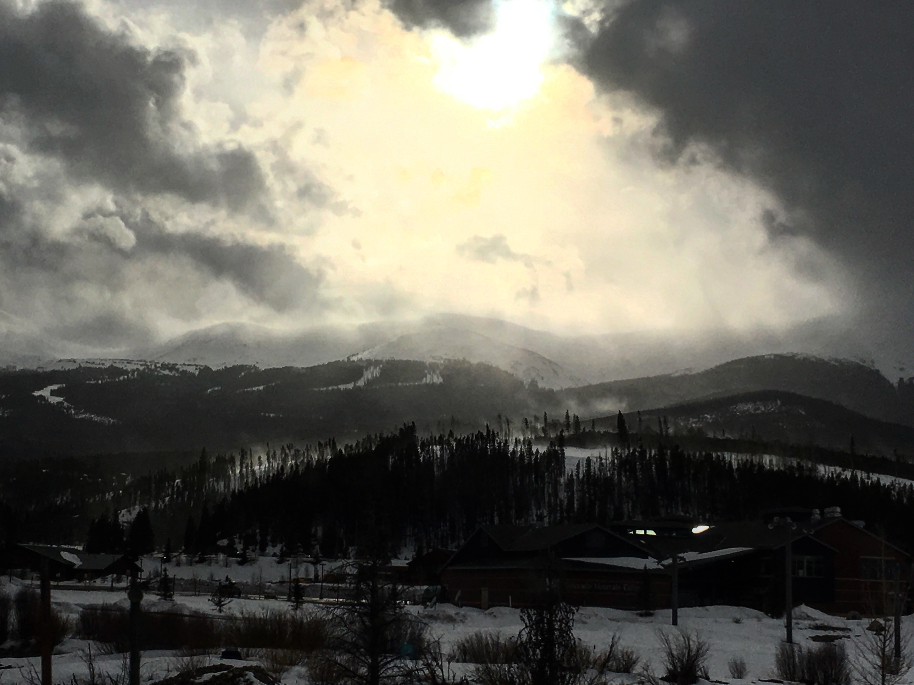
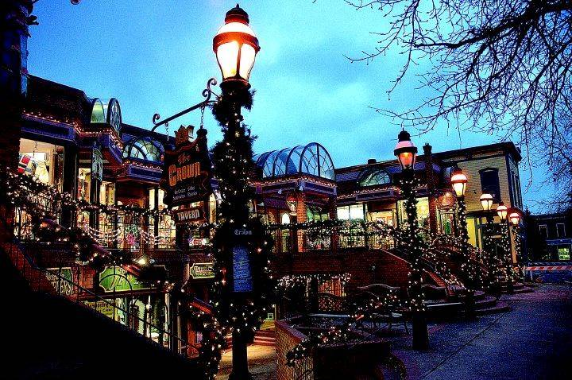
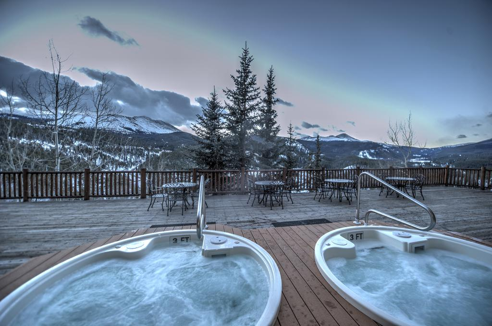
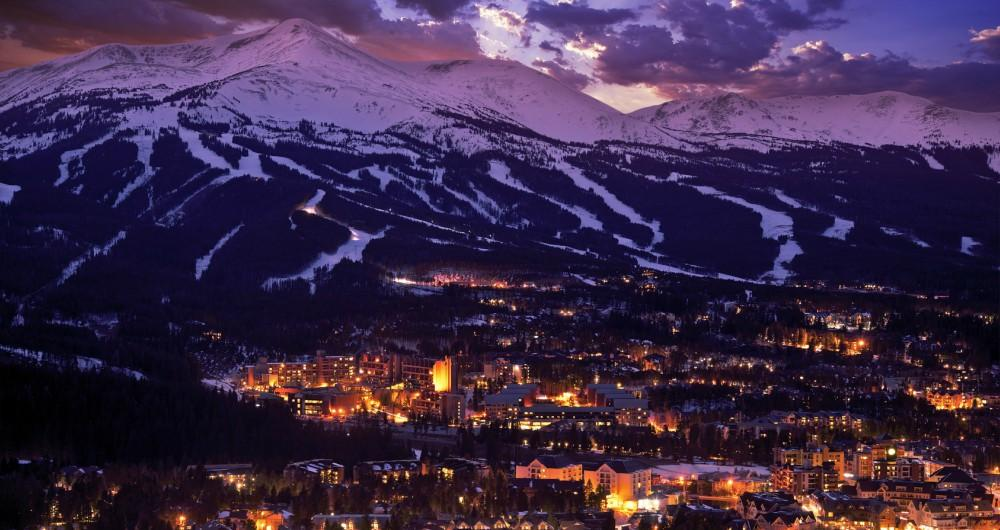
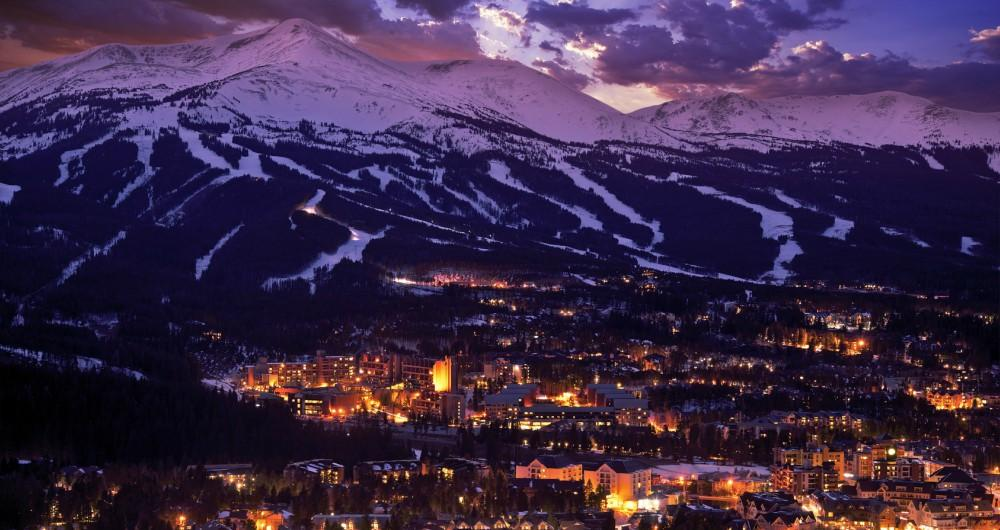

BRECKENRIDGE
Adventure
Travel
The adventure began early on a Thursday morning rising early to catch a flight to Milwaukee. From Milwaukee, we flew to Denver in the comfort of Southwest with drinks in hand. Finally in Denver, the mountain shuttle gathered us and our belongings, and we embarked for Breckenridge. The shuttle lasted 2 hours, and we ended at our condo at the base of the mountain.

Mountain
Breckenridge has 6 different peaks all of which vary in difficulty and size. You can ski from one to the other, so we traversed through all of them. I will always remember the feeling of awe when I first looked down at the top of the mountain. Neither words nor pictures do the beauty justice.
Relax
City of Breckenridge
When we were not out on the slopes, we enjoyed the quaint city of Breckenridge. Being a small ski town at the base of the mountain, Breckenridge's streets are lined with local ski shops, boutiques, restaurants, and bars. The city comes alive at night as people leave the mountain, and the Christmas lights illuminate the snowy ground.
Rest & Recuperation
Our condo had plenty of room for the two of us, and we had access to 2 hot tubs shared between the condom complex. We spent time in the hot tub with heavy snow fall and the mountain in the background, which was absolutely incredible.
Live
The streets of Breckenridge are full of small restaurants and bars. As the light fades from the day, skiers frequent their favorite watering holes. Ollie's, one of the more popular establishments with hands down the best fried pickles I've ever eaten, sits in the heart of downtown. The crowd is mixed between people still wearing their skiing/snowboarding gear and those dressed casually for a nice evening on the town.
 
